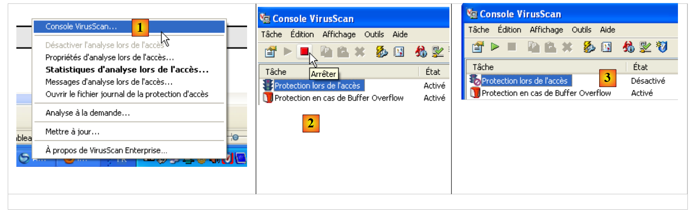
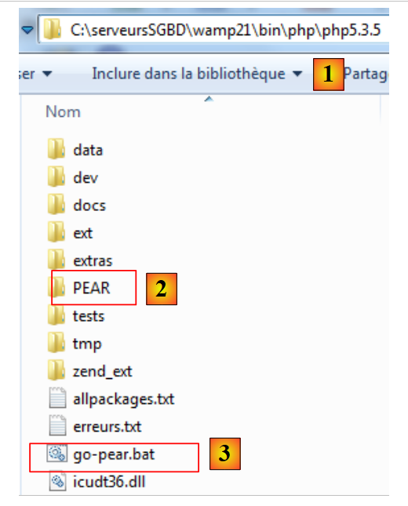

9. وظائف الشبكة في PHP
نتناول الآن وظائف الشبكة الخاصة بـ PHP التي تتيح لنا البرمجة باستخدام TCP / IP (بروتوكول التحكم في النقل / بروتوكول الإنترنت).
9.1. الحصول على اسم أو عنوان IP لجهاز على الإنترنت (inet_01)
<?php
// يعمل اسم الجهاز <--> عنوان الجهاز IP
ini_set("display_errors", "off");
// ثوابت
$HOTES = array("istia.univ-angers.fr", "www.univ-angers.fr", "www.ibm.com", "localhost", "", "xx");
// عناوين IP لأجهزة $HOTES
for ($i = 0; $i < count($HOTES); $i++) {
getIPandName($HOTES[$i]);
}
// النهاية
exit;
//------------------------------------------------
function getIPandName($nomMachine) {
//$nomMachine: اسم الجهاز الذي نريد الحصول على عنوانه IP
// nomMachine-->عنوان IP
$ip = gethostbyname($nomMachine);
if ($ip != $nomMachine) {
print "ip[$nomMachine]=$ip\n";
// العنوان IP --> nomMachine
$name = gethostbyaddr($ip);
if ($name != $ip) {
print "name[$ip]=$name\n";
} else {
print "Erreur, machine[$ip] non trouvée\n";
}
} else {
print "Erreur, machine[$nomMachine] non trouvée\n";
}
}
النتائج:
ip[istia.univ-angers.fr]=193.49.146.171
name[193.49.146.171]=istia.istia.univ-angers.fr
ip[www.univ-angers.fr]=193.49.144.40
name[193.49.144.40]=ametys-fo.univ-angers.fr
ip[www.ibm.com]=129.42.56.216
Erreur, machine[129.42.56.216] non trouvée
ip[localhost]=127.0.0.1
name[127.0.0.1]=localhost127.0.0.1
ip[]=192.168.1.11
name[192.168.1.11]=st-PC.home
Erreur, machine[xx] non trouvée
تعليقات
- السطر 4: يُطلب عدم عرض أخطاء التنفيذ.
يتم استخدام وظائف الشبكة الخاصة بـ PHP في الوظيفة getIpandName في السطر 15.
- السطر 18: تسمح الدالة gethostbyname($nom) بالحصول على عنوان IP "ip3.ip2.ip1.ip0" للجهاز المسمى $nom. إذا لم يكن الجهاز $nom موجودًا، فإن الدالة تُرجع $nom كنتيجة.
- السطر 22: تسمح الدالة gethostbyaddr($ip) بالحصول على اسم الجهاز ذي العنوان $ip بالصيغة "ip3.ip2.ip1.ip0". إذا لم يكن الجهاز $ip موجودًا، فإن الدالة تُرجع $ip كنتيجة.
9.2. عميل ويب ( inet_02)
نص برمجي يسمح بالحصول على محتوى الصفحة الرئيسية لموقع ويب.
<?php
// معالجة الأخطاء
ini_set("display_errors","off");
// الحصول على النص HTML من URL
// قائمة مواقع الويب
$SITES = array("istia.univ-angers.fr", "www.univ-angers.fr", "www.ibm.com", "xx");
// قراءة صفحات الفهرس الخاصة بمواقع الجدول $SITES
for ($i = 0; $i < count($SITES); $i++) {
// قراءة صفحة فهرس الموقع $SITES[$i]
$résultat = getIndex($SITES[$i]);
// عرض النتيجة
print "$résultat\n";
}//لـ
// النهاية
exit;
//-----------------------------------------------------------------------
function getIndex($site) {
// يقرأ URL $site/ ويخزنه في الملف $site.html
// إنشاء الملف $site.html
$html = fopen("$site.html", "w");
if (!$html)
return "Erreur lors de la création du fichier $site.html";
// فتح اتصال على المنفذ 80 لـ $site
$connexion = fsockopen($site, 80);
// العودة في حالة حدوث خطأ
if (!$connexion)
return "Echec de la connexion au site ($site,80) : $erreur";
// يمثل $connexion تدفق اتصال ثنائي الاتجاه
// بين العميل (هذا البرنامج) وخادم الويب الذي تم الاتصال به
// يُستخدم هذا القناة لتبادل الأوامر والمعلومات
// بروتوكول الاتصال هو HTTP
// يرسل العميل الأمر get لطلب URL /
// صيغة الأمر get هي URL HTTP/1.0
// يجب أن تنتهي رؤوس (headers) بروتوكول HTTP بسطر فارغ
fputs($connexion, "GET / HTTP/1.0\n\n");
// سيقوم الخادم الآن بالرد على القناة $connexion. سيقوم بإرسال جميع
// هذه البيانات ثم يغلق القناة. وبالتالي، يقرأ العميل كل ما يصل من $connexion
// حتى يتم إغلاق القناة
while ($ligne = fgets($connexion, 1000))
fputs($html, $ligne);
// يقوم العميل بدوره بإغلاق الاتصال
fclose($connexion);
// إغلاق الملف $html
fclose($html);
// العودة
return "Transfert réussi de la page index du site $site";
}
النتائج: على سبيل المثال، الملف المستلم لموقع [www.ibm.com]:
- الأسطر 1-11 هي رؤوس HTTP لاستجابة الخادم
- السطر 1: يطلب الخادم من العميل إعادة التوجيه إلى العنوان المحدد في السطر 8
- السطر 2: تاريخ ووقت الرد
- السطر 3: هوية خادم الويب
- السطر 4: المحتوى المرسل من الخادم. هنا صفحة HTML تبدأ في السطر 13
- السطر 12: السطر الفارغ الذي ينهي رؤوس HTTP
- الأسطر 13-19: الصفحة HTML المرسلة من خادم الويب.
تعليقات على الكود:
- السطر 7: قائمة عناوين URL لمواقع الويب التي نريد صفحتها الرئيسية. سيتم تخزين هذه القائمة في ملف نصي [nomsite.html].
- السطر 11: تقوم الدالة getIndex بهذه المهمة
- السطر 19: تقوم الدالة getIndex($site) بتنزيل الصفحة الجذرية (أو الصفحة الرئيسية) لموقع الويب $site وتخزينها في الملف النصي $site.html.
- السطر 27: تتيح الدالة fsockopen($site,$port) إنشاء اتصال بخدمة TCP / IP التي تعمل على المنفذ $port في الجهاز $site. بمجرد فتح اتصال العميل/الخادم، تتبادل العديد من الخدمات TCP / IP أسطر النص. وهذا هو الحال هنا بالنسبة لبروتوكول HTTP (بروتوكول نقل HyperText). يمكن عندئذٍ معالجة التدفق الوارد من الخادم إلى العميل كملف نصي. وينطبق الأمر نفسه على التدفق الصادر من العميل إلى الخادم.
- السطر 38: تتيح الدالة fputs للعميل إرسال البيانات إلى الخادم. وفي هذه الحالة، فإن سطر النص المرسل يحمل المعنى التالي: «أريد (GET) الصفحة الجذرية (/) لموقع الويب الذي أنا متصل به. أنا أعمل باستخدام بروتوكول HTTP الإصدار 1.0". الإصدار الحالي لهذا البروتوكول هو 1.1.
- السطر 42: يمكن قراءة أسطر النص الواردة في استجابة الخادم سطراً سطراً باستخدام حلقة while وتسجيلها في الملف النصي [$site.html]. عندما يرسل خادم الويب الصفحة المطلوبة، فإنه يغلق اتصاله مع العميل. من جانب العميل، سيتم اكتشاف ذلك على أنه نهاية الملف.
9.3. عميل SMTP (inet_03)
من بين بروتوكولات TCP / IP، يعد SMTP (بروتوكول نقل SendMail) بروتوكول الاتصال لخدمة إرسال الرسائل.
ملاحظات:
- على جهاز يعمل بنظام Windows مزود ببرنامج مكافحة فيروسات، من المحتمل أن يمنع هذا البرنامج البرنامج النصي PHP من الاتصال بالمنفذ 25 لخادم SMTP. لذا، يجب تعطيل برنامج مكافحة الفيروسات. بالنسبة لـ McAfee على سبيل المثال، يمكن اتباع الخطوات التالية:
 |
- في [1]، يتم تنشيط وحدة التحكم VirusScan
- في [2]، يتم إيقاف الخدمة [Protection lors de l'accès]
- في [3]، يتم إيقافها
النص البرمجي:
<?php
// عميل SMTP (بروتوكول النقل SendMail) الذي يسمح بإرسال رسالة
// يتم استخراج المعلومات من ملف $INFOS الذي يحتوي على الأسطر التالية
// السطر 1: smtp، المرسل، المستلم
// الأسطر التالية: نص الرسالة
// المرسل: البريد الإلكتروني للمرسل
// المستلم: البريد الإلكتروني للمستلم
// smtp: اسم خادم smtp المطلوب استخدامه
// بروتوكول الاتصال SMTP عميل-خادم
// -> يتصل العميل بالمنفذ 25 لخادم SMTP
// <- الخادم يرسل له رسالة ترحيب
// -> العميل يرسل الأمر EHLO: اسم جهازه
// <- الخادم يرد بـ OK أو لا
// -> العميل يرسل الأمر mail from: <المرسل>
// <- يرد الخادم بـ OK أو لا
// -> يرسل العميل الأمر rcpt to: <المستلم>
// <- يستجيب الخادم بـ OK أو لا يستجيب
// -> يرسل العميل الأمر data
// <- الخادم يرد بـ OK أو لا يرد
// -> العميل يرسل جميع أسطر رسالته وينهيها بسطر يحتوي على
// الحرف الوحيد.
// <- يرد الخادم بـ OK أو لا يرد
// -> يرسل العميل الأمر quit
// <- الخادم يرد بـ OK أو لا
// تكون ردود الخادم على شكل xxx نص، حيث xxx هو رقم مكون من 3 أرقام. أي رقم xxx >=500
// يشير إلى وجود خطأ. قد تتضمن الإجابة عدة أسطر تبدأ جميعها بـ xxx باستثناء السطر الأخير
// بالشكل xxx(مسافة)
// يجب أن تنتهي أسطر النص المتبادلة بالأحرف RC(#13) و LF(#10)
// البيانات
$INFOS = "mail.txt"; // معلمات إرسال البريد
// يتم استرداد معلمات البريد
list($erreur, $smtpServer, $expéditeur, $destinataire, $message) = getInfos($INFOS);
// خطأ؟
if ($erreur) {
print "$erreur\n";
exit;
}
print "Envoi du message [$smtpServer,$expéditeur,$destinataire]\n";
// إرسال البريد في الوضع التفصيلي
$résultat = sendmail($smtpServer, $expéditeur, $destinataire, $message, 1);
print "Résultat de l'envoi : $résultat\n";
// النهاية
exit;
//-----------------------------------------------------------------------
function getInfos($fichier) {
// إرجاع المعلومات ($smtp,$expéditeur,$destinataire,$message) المأخوذة من الملف النصي $fichier
// السطر 1: smtp، المرسل، المستلم
// الأسطر التالية: نص الرسالة
// فتح ملف $fichier
$infos = fopen($fichier, "r");
// هل الملف $fichier موجود
if (!$infos)
return array("Le fichier $fichier n'a pu être ouvert en lecture");
// قراءة السطر الأول
$ligne = fgets($infos, 1000);
// حذف علامة نهاية السطر
$ligne = cutNewLineChar($ligne);
// استرداد الحقول smtp، المرسل، المستلم
$champs = explode(",", $ligne);
// هل عدد الحقول صحيح؟
if (count($champs) != 3)
return "La ligne 1 du fichier $fichier (serveur smtp, expéditeur, destinataire) a un
nombre de champs incorrect";
// «معالجة» المعلومات المسترجعة
for ($i = 0; $i < count($champs); $i++)
$champs[$i] = trim($champs[$i]);
// استرداد الحقول
list($smtpServer, $expéditeur, $destinataire) = $champs;
// قراءة الرسالة
$message = "";
while ($ligne = fgets($infos, 1000))
$message.=$ligne;
fclose($infos);
// العودة
return array("", $smtpServer, $expéditeur, $destinataire, $message);
}
//-----------------------------------------------------------------------
function sendmail($smtpServer, $expéditeur, $destinataire, $message, $verbose) {
// إرسال $message إلى خادم smtp $smtpserver نيابة عن $expéditeur
// إلى $destinataire. إذا كان $verbose=1، فيتم تتبع التبادلات بين العميل والخادم
// يتم استرداد اسم العميل
$client = gethostbyaddr(gethostbyname(""));
// فتح اتصال على المنفذ 25 لـ $smtpServer
$connexion = fsockopen($smtpServer, 25);
// العودة في حالة حدوث خطأ
if (!$connexion)
return "Echec de la connexion au site ($smtpServer,25)";
// يمثل $connexion تدفقًا اتصاليًا ثنائي الاتجاه
// بين العميل (هذا البرنامج) وخادم SMTP الذي تم الاتصال به
// يُستخدم هذا القناة لتبادل الأوامر والمعلومات
// بعد الاتصال، يرسل الخادم رسالة ترحيب يتم قراءتها
$erreur = sendCommand($connexion, "", $verbose, 1);
if ($erreur) {
fclose($connexion);
return $erreur;
}
// الأمر ehlo:
$erreur = sendCommand($connexion, "EHLO $client", $verbose, 1);
if ($erreur) {
fclose($connexion);
return $erreur;
}
// الأمر mail from:
$erreur = sendCommand($connexion, "MAIL FROM: <$expéditeur>", $verbose, 1);
if ($erreur) {
fclose($connexion);
return $erreur;
}
// الأمر rcpt to:
$erreur = sendCommand($connexion, "RCPT TO: <$destinataire>", $verbose, 1);
if ($erreur) {
fclose($connexion);
return $erreur;
}
// الأمر data
$erreur = sendCommand($connexion, "DATA", $verbose, 1);
if ($erreur) {
fclose($connexion);
return $erreur;
}
// تحضير الرسالة المراد إرسالها
// يجب أن تحتوي على الأسطر
// من: المرسل
// إلى: المستلم
// سطر فارغ
// الرسالة
// .
$data = "From: $expéditeur\r\nTo: $destinataire\r\n$message\r\n.\r\n";
$erreur = sendCommand($connexion, $data, $verbose, 0);
if ($erreur) {
fclose($connexion);
return $erreur;
}
// أمر الخروج
$erreur = sendCommand($connexion, "QUIT", $verbose, 1);
if ($erreur) {
fclose($connexion);
return $erreur;
}
// نهاية
fclose($connexion);
return "Message envoyé";
}
// --------------------------------------------------------------------------
function sendCommand($connexion, $commande, $verbose, $withRCLF) {
// إرسال $commande إلى القناة $connexion
// وضع التفصيلي إذا كان $verbose=1
// إذا كان $withRCLF=1، يُضاف التسلسل RCLF إلى التبادل
// البيانات
if ($withRCLF)
$RCLF = "\r\n"; else
$RCLF="";
// إرسال الأمر إذا كان $commande غير فارغ
if ($commande) {
fputs($connexion, "$commande$RCLF");
// صدى محتمل
if ($verbose)
affiche($commande, 1);
}//إذا
// قراءة الرد
$réponse = fgets($connexion, 1000);
// صدى محتمل
if ($verbose)
affiche($réponse, 2);
// استرداد رمز الخطأ
$codeErreur = substr($réponse, 0, 3);
// آخر سطر في الرد؟
while (substr($réponse, 3, 1) == "-") {
// قراءة الرد
$réponse = fgets($connexion, 1000);
// صدى محتمل
if ($verbose)
affiche($réponse, 2);
}//while
// انتهت الإجابة
// هل أرسل الخادم خطأً؟
if ($codeErreur >= 500)
return substr($réponse, 4);
// العودة دون أخطاء
return "";
}
// --------------------------------------------------------------------------
function affiche($échange, $sens) {
// يعرض $échange على الشاشة
// إذا كان $sens=1 يعرض -->$echange
// إذا كان $sens=2، يعرض <-- $échange بدون الحرفين الأخيرين RCLF
switch ($sens) {
case 1:
print "--> [$échange]\n";
return;
case 2:
$L = strlen($échange);
print "<-- [" . substr($échange, 0, $L - 2) . "]\n";
return;
}//switch
}
// --------------------------------------------------------------------------
function cutNewLinechar($ligne) {
// يتم حذف علامة نهاية السطر من $ligne إن وجدت
...
}
الملف infos.txt:
- السطر 1: [smtp.orange.fr] الخادم المستخدم لإرسال البريد، [serge.tahe@univ-angers.fr] عنوان المرسل، [serge.tahe@istia.univ-angers.fr] عنوان المستلم
- السطر 2: رؤوس الرسالة. هنا يوجد رأس واحد فقط، وهو عنوان الرسالة.
- السطر 3: السطر الفارغ ينهي رؤوس الرسالة
- الأسطر 4-7: نص الرسالة
نتائج الشاشة:
- السطر 1: رسالة تتبع تنفيذ البرنامج النصي
- السطر 2: أول استجابة من خادم SMTP. تأتي هذه الاستجابة بعد اتصال العميل بالمنفذ 25 لخادم SMTP. تكون استجابات الخادم عبارة عن أسطر بالصيغة [xxx message] أو [xxx-message]. تشير الصيغة الأولى إلى أن الرد قد اكتمل. xxx هو رمز النتيجة. تشير القيمة التي تساوي أو تزيد عن 500 إلى وجود خطأ. تشير الصيغة الثانية إلى أن الرد لم يكتمل وأنه سيتبعه سطر آخر.
- السطر 2: يشير خادم SMTP إلى أنه جاهز لتلقي الأوامر
- السطر 3: يرسل العميل الأمر [EHLO nomDeMachine] حيث nomDeMachine هو اسم الإنترنت للجهاز الذي يعمل عليه العميل
- الأسطر 4-10: رد خادم SMTP
- السطر 11: يرسل العميل الأمر [MAIL FROM: <expéditeur>] الذي يشير إلى عنوان البريد الإلكتروني للمرسل.
- السطر 12: يشير خادم SMTP إلى أنه يقبل هذا العنوان. كان من الممكن أن يرفضه إذا كانت صيغته غير صحيحة. ومع ذلك، فإنه لا يتحقق من وجود العنوان الإلكتروني بالفعل.
- السطر 13: يرسل العميل الأمر [RCPT TO: <destinataire>] الذي يشير إلى عنوان البريد الإلكتروني لمستلم الرسالة.
- السطر 14: يرد خادم SMTP بأنه يقبل هذا العنوان. وهنا أيضًا، يتم إجراء فحص لصحة الصيغة.
- السطر 15: يرسل العميل الأمر [DATA] الذي يُشير إلى أن الأسطر التالية هي نص الرسالة.
- السطر 16: يرد الخادم بأن الرسالة يمكن إرسالها. وتتكون الرسالة من سلسلة من الأسطر النصية التي يجب أن تنتهي بسطر مكون من حرف واحد، وهو النقطة.
- الأسطر 17-25: الرسالة المرسلة من العميل
- الأسطر 17-19: تُستخدم رؤوس الرسالة [From:, To:, Subject:] للإشارة إلى المرسل والمستلم وموضوع الرسالة على التوالي.
- السطر 20: سطر فارغ يشير إلى نهاية الرؤوس
- الأسطر 21-23: نص الرسالة
- السطر 24: السطر المكون من نقطة واحدة الذي يشير إلى نهاية الرسالة.
- السطر 26: يرد خادم SMTP بأنه يقبل الرسالة
- السطر 27: يرسل العميل الأمر [QUIT] للإشارة إلى أنه قد انتهى
- السطر 28: يرد خادم SMTP بأنه سيقوم بإغلاق الاتصال الذي يربطه بالعميل
تعليقات على الكود
لن ندخل في تفاصيل كود البرنامج النصي لأنه تم تعليقه بشكل وافٍ.
- الأسطر 48-80: الدالة التي تستخدم الملف [infos.txt] الذي يحتوي على الرسالة المراد إرسالها بالإضافة إلى المعلومات اللازمة لهذا الإرسال. وتُرجع هذه الدالة مصفوفة ($erreur، $smtpServer، $expéditeur، $destinataire، $messge) تحتوي على:
- $erreur: رسالة خطأ محتملة، وتكون فارغة في حالة عدم وجود خطأ.
- $smtpServer: اسم خادم SMTP الذي يجب الاتصال به
- $expéditeur: عنوان البريد الإلكتروني للمرسل
- $destinataire: عنوان البريد الإلكتروني للمستلم
- $message: الرسالة المراد إرسالها. بالإضافة إلى نص الرسالة، قد تحتوي على رؤوس.
- الأسطر 84-157: تتولى الدالة sendMail مهمة إرسال الرسالة. ومعلماتها هي كما يلي:
- $smtpServer: اسم خادم SMTP الذي يجب الاتصال به
- $expéditeur: عنوان البريد الإلكتروني للمرسل
- $destinataire: عنوان البريد الإلكتروني للمستلم
- $message: الرسالة المراد إرسالها.
- $verbose: عند 1 يشير إلى أنه يجب عرض التبادلات مع خادم SMTP على وحدة التحكم.
تُرجع الدالة sendMail رسالة خطأ، وتكون فارغة في حالة عدم وجود خطأ.
- السطر 88: يسمح بالحصول على اسم Windows لجهاز كمبيوتر يعمل بنظام Windows.
- السطر 99: رأينا أن الحوار بين العميل والخادم كان عبارة عن سلسلة من النمط التالي:
- إرسال العميل لأمر في سطر واحد
- رد من الخادم في سطر واحد أو عدة أسطر
- الأسطر 161-208: تقبل الدالة sendCommand المعلمات التالية:
- $connexion: القناة TCP / IP التي تربط العميل بالخادم
- $commande: الأمر المراد إرساله عبر هذا القناة. سيتم قراءة استجابة الخادم لهذا الأمر.
- $verbose: عند 1 يشير إلى أنه يجب عرض التبادلات مع خادم smtp على وحدة التحكم.
- $withRCLF: عند 1 يشير إلى ضرورة إضافة علامة نهاية السطر "\r\n" في نهاية الأمر
- السطر 173: إرسال الأمر من قبل العميل
- السطر 181: قراءة السطر الأول من استجابة خادم SMTP بالصيغة xxx نص أو xxx-نص. تشير الحالة الأخيرة إلى أن الخادم لديه سطر آخر لإرساله. xxx هو رمز الخطأ المرسل من الخادم.
- السطر 188 – استرداد رمز الخطأ من الرد
- الأسطر 191-199: قراءة الأسطر الأخرى من الرد
- السطران 203-204: إذا كان رمز الخطأ >=500، فهذا يعني أن خادم SMTP يُشير إلى وجود خطأ.
9.4. برنامج ثانٍ لإرسال البريد الإلكتروني (inet_04)
يتمتع هذا البرنامج النصي بنفس وظيفة البرنامج السابق: إرسال بريد إلكتروني. ونستخدم لهذا الغرض وحدات من مكتبة PEAR. تحتوي هذه المكتبة على عشرات الوحدات التي تغطي مجالات مختلفة. وسنستخدم الوحدات التالية:
- Net/SMTP: وحدة تسمح بالتواصل مع خادم SMTP
- Mail: وحدة تسمح بإدارة إرسال البريد الإلكتروني وفقًا لبروتوكولات مختلفة.
- Mail/Mime: وحدة تسمح بإنشاء رسالة يمكن أن تتضمن مستندات مرفقة.
للحصول على هذه الوحدات، يجب أولاً تثبيتها على الجهاز الذي يقوم بتشغيل البرنامج النصي PHP. أدى تثبيت حزمة البرامج WampServer إلى تثبيت مترجم PHP. في شجرة هذا المترجم، يمكن تثبيت الوحدات النمطية PEAR.
 |
- في [1]، مجلد تثبيت مترجم PHP
- في [2]، المجلد PEAR الذي سيحتوي على الوحدات النمطية PEAR التي سيتم تثبيتها
- إلى [3]، ملف الأوامر [go-pear.bat] الذي يقوم بتهيئة المكتبة PEAR
لتهيئة المكتبة PEAR، نفتح نافذة DOS ونقوم بتنفيذ الملف [go-pear.bat]. سيتصل هذا البرنامج النصي بموقع الويب الخاص بالمكتبة PEAR. لذلك، يلزم وجود اتصال بالإنترنت.
بعد الاتصال بموقع المكتبة على الإنترنت PEAR، سيقوم البرنامج النصي بتنزيل عدد من العناصر. ومن بينها، برنامج نصي جديد [pear.bat]. وباستخدام هذا البرنامج النصي، سنقوم بتثبيت الوحدات المختلفة PEAR التي نحتاجها. يتم استدعاء هذا البرنامج النصي باستخدام معلمات. ومن بين هذه المعلمات، تتيح المعلمة [help] الحصول على قائمة بالأوامر التي يقبلها البرنامج النصي:
C:\serveursSGBD\wamp21\bin\PHP\php5.3.5>pear help
Commands:
build Build an Extension From C Source
bundle Unpacks a Pecl Package
channel-add Add a Channel
channel-alias Specify an alias to a channel name
channel-delete Remove a Channel From the List
channel-discover Initialize a Channel from its server
channel-info Retrieve Information on a Channel
channel-login Connects and authenticates to remote channel server
channel-logout Logs out from the remote channel server
channel-update Update an Existing Channel
clear-cache Clear Web Services Cache
config-create Create a Default configuration file
config-get Show One Setting
config-help Show Information About Setting
config-set Change Setting
config-show Show All Settings
convert Convert a package.xml 1.0 to package.xml 2.0 format
cvsdiff Run a "cvs diff" for all files in a package
cvstag Set CVS Release Tag
download Download Package
download-all Downloads each available package from the default channel
info Display information about a package
install Install Package
list List Installed Packages In The Default Channel
list-all List All Packages
list-channels List Available Channels
list-files List Files In Installed Package
list-upgrades List Available Upgrades
login Connects and authenticates to remote server [Deprecated i
n favor of channel-login]
logout Logs out from the remote server [Deprecated in favor of c
hannel-logout]
makerpm Builds an RPM spec file from a PEAR package
package Build Package
package-dependencies Show package dependencies
package-validate Validate Package Consistency
pickle Build PECL Package
remote-info Information About Remote Packages
remote-list List Remote Packages
run-scripts Run Post-Install Scripts bundled with a package
run-tests Run Regression Tests
search Search remote package database
shell-test Shell Script Test
sign Sign a package distribution file
svntag Set SVN Release Tag
uninstall Un-install Package
update-channels Update the Channel List
upgrade Upgrade Package
upgrade-all Upgrade All Packages [Deprecated in favor of calling upgr
ade with no parameters]
Usage: pear [options] command [command-options] <parameters>
Type "pear help options" to list all options.
Type "pear help shortcuts" to list all command shortcuts.
Type "pear help <command>" to get the help for the specified command.
يتيح الأمر [install] تثبيت الوحدات النمطية PEAR. يمكن طلب المساعدة بشأن الأمر [install]:
C:\serveursSGBD\wamp21\bin\PHP\php5.3.5>pear help install
pear install [options] [channel/]<package> ...
Installs one or more PEAR packages. You can specify a package to install in four ways:
"Package-1.0.tgz" : installs from a local file
"http://example.com/Package-1.0.tgz" : installs from anywhere on the net.
"package.xml" : installs the package described in package.xml. Useful for testing, or for wrapping a PEAR package in another package manager such as RPM.
"Package[-version/state][.tar]" : queries your default channel's server(pear.php.net) and downloads the newest package with the preferred quality/state (stable).
To retrieve Package version 1.1, use "Package-1.1," to retrieve Package state beta, use "Package-beta." To retrieve an uncompressed file, append .tar (make sure there is no file by the same name first)
To download a package from another channel, prefix with the channel name like "channel/Package"
More than one package may be specified at once. It is ok to mix these four ways of specifying packages.
Options:
-f, --force
will overwrite newer installed packages
-l, --loose
do not check for recommended dependency version
-n, --nodeps
ignore dependencies, install anyway
-r, --register-only
do not install files, only register the package as installed
-s, --soft
soft install, fail silently, or upgrade if already installed
-B, --nobuild
don't build C extensions
-Z, --nocompress
request uncompressed files when downloading
-R DIR, --installroot=DIR
root directory used when installing files (ala PHP's INSTALL_ROOT), use packagingroot for RPM
-P DIR, --packagingroot=DIR
root directory used when packaging files, like RPM packaging
--ignore-errors
force install even if there were errors
-a, --alldeps
install all required and optional dependencies
-o, --onlyreqdeps
install all required dependencies
-O, --offline
do not attempt to download any urls or contact channels
-p, --pretend
Only list the packages that would be downloaded
الوحدات النمطية PEAR المطلوب تثبيتها هي التالية: [Mail]، [Mail_Mime]، [Net_SMTP]. في نافذة DOS، سنقوم بكتابة الأوامر التالية بالتتابع:
<PHP_installDir>pear install Mail
...
<PHP_installDir>pear install Mail_Mime
…
<PHP_installDir>pear install Net_SMTP
…
حيث <PHP_installDir> هو مجلد تثبيت المترجم PHP (C:\serveursSGBD\wamp21\bin\PHP\php5.3.5 في هذا المثال)
يمكن رؤية الوحدات المثبتة:
C:\serveursSGBD\wamp21\bin\PHP\php5.3.5>pear list
INSTALLED PACKAGES, CHANNEL PEAR.php.NET:
=========================================
PACKAGE VERSION STATE
Archive_Tar 1.3.7 stable
Console_Getopt 1.3.1 stable
Mail 1.2.0 stable
Mail_Mime 1.8.1 stable
Net_SMTP 1.6.0 stable
Net_Socket 1.0.10 stable
PEAR 1.9.4 stable
PHPUnit 1.3.2 stable
Structures_Graph 1.0.4 stable
XML_Util 1.2.1 stable
يتم تثبيت الوحدات النمطية في المجلد <PHP_installDir>/PEAR:
 |
بعد تثبيت الوحدات النمطية PEAR، يصبح نص البرنامج النصي PHP الخاص بإرسال البريد الإلكتروني كما يلي:
<?php
// إدارة الأخطاء
ini_set("display_errors", "off");
// الوحدات النمطية
ini_set("include_path", ".;C:\serveursSGBD\wamp21\bin\PHP\php5.3.5\PEAR");
require_once "Mail.php";
require_once "Mail/Mime.php";
require_once "Net/SMTP.php";
// العميل SMTP (بروتوكول النقل SendMail) الذي يتيح إرسال رسالة
// تم استخراج المعلومات من ملف $INFOS الذي يحتوي على الأسطر التالية
// السطر 1: smtp، المرسل، المستلم، المرفق
// الأسطر التالية: نص الرسالة
// المرسل: البريد الإلكتروني للمرسل
// المستلم: البريد الإلكتروني للمستلم
// smtp: اسم خادم smtp المطلوب استخدامه
// المرفق: اسم المستند المراد إرفاقه
//
// البيانات
$INFOS = "mail2.txt"; // معلمات إرسال البريد
// يتم استرداد إعدادات البريد
list($erreur, $smtpServer, $expéditeur, $destinataire, $message, $sujet, $attachement) = getInfos($INFOS);
// خطأ؟
if ($erreur) {
print "$erreur\n";
exit;
}
print "Envoi du message [$smtpServer,$expéditeur,$destinataire,$sujet, $attachement]\n";
// إرسال البريد في الوضع التفصيلي
$résultat = sendmail($smtpServer, $expéditeur, $destinataire, $message, $sujet, $attachement);
print "Résultat de l'envoi : $résultat\n";
// النهاية
exit;
//-----------------------------------------------------------------------
function getInfos($fichier) {
// إرجاع المعلومات ($smtp,$expéditeur,$destinataire,$message, $sujet, $attachement) المأخوذة من الملف النصي $fichier
// السطر 1: smtp، المرسل، المستلم، الموضوع، المرفق
// الأسطر التالية: نص الرسالة
...
// عودة
return array("", $smtpServer, $expéditeur, $destinataire, $message, $sujet, $attachement);
}
//getInfos
//-----------------------------------------------------------------------
function sendmail($smtpServer, $expéditeur, $destinataire, $message, $sujet, $attachement) {
// يرسل $message إلى خادم SMTP $smtpserver نيابة عن $expéditeur
// إلى $destinataire. المستند $attachement مرفق بالرسالة
// الرسالة لها الموضوع $sujet
//
// الرسالة
$msg = new Mail_Mime();
$msg->setTXTBody($message);
$msg->addAttachment($attachement);
$headers = $msg->headers(array("From" => $expéditeur, "To" => $destinataire, "Subject" => $sujet));
// إرسال
$mailer = &Mail::factory("smtp", array("host" => $smtpServer, "port" => 25));
$envoi = $mailer->send($expéditeur, $headers, $msg->get());
if ($envoi === TRUE) {
return "Message envoyé";
} else {
return $envoi;
}
}
// --------------------------------------------------------------------------
function cutNewLinechar($ligne) {
// يتم حذف علامة نهاية السطر من $ligne إن وجدت
…
}
الملف [mail2.txt]:
- السطر 1: بالترتيب، الخادم SMTP، عنوان المرسل، عنوان المستلم، موضوع الرسالة، المستند المرفق.
- الأسطر 2-4: نص الرسالة
نتائج الشاشة
Envoi du message [smtp.orange.fr,serge.tahe@univ-angers.fr,serge.tahe@univ-angers.fr,test, document.pdf]
Résultat de l'envoi : Message envoyé
تعليقات
لا يختلف هذا البرنامج النصي عن السابق إلا في وظيفته sendmail. ونوضح هذه الوظيفة فيما يلي:
- السطر 6: تم تثبيت البرامج النصية PHP الخاصة بالوحدات النمطية PEAR في دليل لا يتم استكشافه افتراضيًا بواسطة المترجم PHP. ولكي يتمكن المفسر من العثور على الوحدات النمطية PEAR، نقوم بأنفسنا بتحديد المجلدات التي يجب أن يقوم المفسر PHP باستكشافها. ومن الممكن تعديل بعض معلمات تكوين المفسر PHP أثناء التنفيذ. لا يكون هذا التعديل مرئيًا إلا للنص البرمجي الذي يقوم به، وفقط خلال فترة تنفيذه. يمكن العثور على التكوين الافتراضي للمترجم PHP في الملف <PHP_installdir>/PHP.ini. يحتوي هذا الملف على أسطر بالصيغة
يمكن تعديل قيمة المفتاح أثناء التنفيذ بواسطة الدالة ini_set(مفتاح، nouvelle_valeur). المفتاح الذي يحدد مسار البحث الذي يستخدمه المترجم للوظائف والفئات PHP المشار إليها في البرنامج النصي هو 'include_path'. هنا، نضع في مسار البحث كل من مجلد البرنامج النصي (.) ومجلد PEAR من مجلد تثبيت المترجم PHP.
- الأسطر 7-9: يتم تحميل البرامج النصية PHP الخاصة بإرسال البريد الإلكتروني.
- السطر 50: الدالة sendmail المسؤولة عن إرسال البريد. معلماتها هي كما يلي:
- $smtpServer: اسم خادم SMTP الذي يجب الاتصال به
- $expéditeur: عنوان البريد الإلكتروني للمرسل
- $destinataire: عنوان البريد الإلكتروني للمستلم
- $message: الرسالة المراد إرسالها.
- $sujet: موضوع الرسالة
- $attachement: اسم المستند المراد إرفاقه بالرسالة
تُرجع الدالة sendMail رسالة خطأ، وتكون فارغة في حالة عدم وجود خطأ.
- السطر 56: إنشاء رسالة من النوع Mail_Mime. تتكون هذه الرسالة من رؤوس (From، To، Subject) ونص (الرسالة نفسها)
- السطر 57: يتم تحديد نص الرسالة Mail_Mime.
- السطر 58: إرفاق مستند بالرسالة
- السطر 59: يتم تحديد رؤوس الرسالة (From، To، Subject) للرسالة Mail_Mime
- السطر 61: يتم إنشاء الفئة المسؤولة عن إرسال الرسالة Mail_Mime. المعلمة الأولى للطريقة هي اسم البروتوكول المطلوب استخدامه، وهو في هذه الحالة البروتوكول SMTP. أما المعلمة الثانية فهي مصفوفة تحدد اسم ومنفذ خدمة SMTP المطلوب استخدامها
- السطر 62: إرسال الرسالة. تتلقى الطريقة send ثلاثة معلمات: عنوان المرسل، ورؤوس الرسالة Mail_Mime، ونص الرسالة Mail_Mime. تُرجع الدالة send القيمة المنطقية TRUE إذا تم الإرسال بنجاح، وإلا فإنها تُرجع رسالة خطأ.